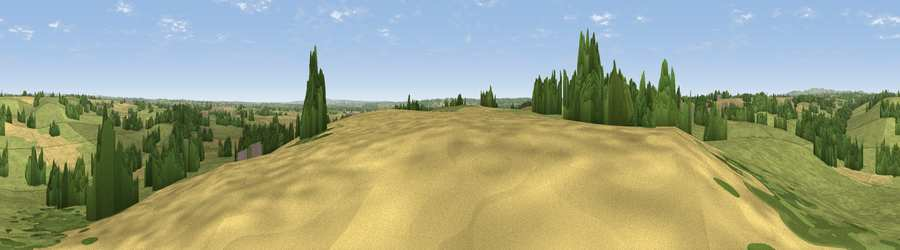

Viewpoint near Boylestone
#31361 in England · top 47% of its area beats it · near BoylestoneThe view, rendered

A 360° render of this exact spot computed from the terrain model, tree cover and land cover — summer colours, afternoon light, calibrated against photographs of famous viewpoints. Real trees, hedges and buildings will differ in detail.
The panorama
Grey silhouette: terrain skyline in each direction (720 bearings, Earth curvature and refraction included). Dashed green: skyline with trees (+15 m) and buildings (+8 m) as obstacles. Blue strip: how far the ground is visible on each bearing.
Where the view opens
Wedge length = distance to the farthest visible ground on that bearing (vegetation-aware). Rings at 10, 25 and 50 km.
What fills the view
66% grassland · 20% cropland · 13% woodland ·
Angular shares of the visible panorama (visual magnitude), not map area. Landscape diversity 0.39 (0–1 Shannon).
Key numbers
More beautiful places nearby
The staircase of upgrades: each row has a higher view potential than everything closer. Driving times are estimates from straight-line distance, calibrated against real road routing — check an actual route before setting out.
| Place | Direction | Drive | Score |
|---|---|---|---|
| Viewpoint near Marston Montgomery | WNW · 6 km | ~13 min | 48.6 |
| Viewpoint near Hanbury | S · 7 km | ~15 min | 50.9 |
| Viewpoint near Hanbury | S · 7 km | ~15 min | 54.7 |
| Viewpoint near Shirley | NNE · 9 km | ~17 min | 55.6 |
| Viewpoint near Wootton | NNW · 12 km | ~23 min | 66.1 |
| Viewpoint near Wootton | NNW · 13 km | ~23 min | 74.4 |
| Viewpoint near Wootton | NW · 13 km | ~24 min | 74.8 |
| Tissington Hill | N · 17 km | ~30 min | 75.5 |
52.91733, -1.74676 · source: screening · position refined by local search. Computed location — check access rights before visiting.